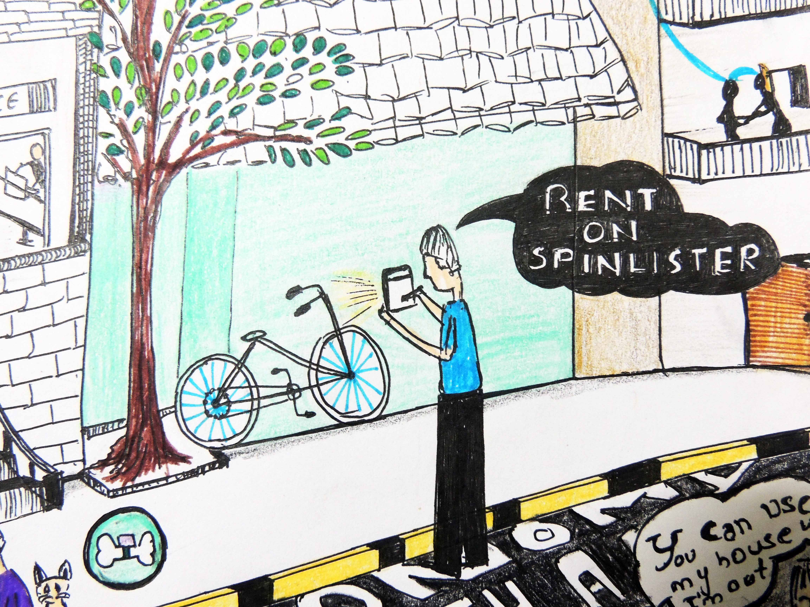
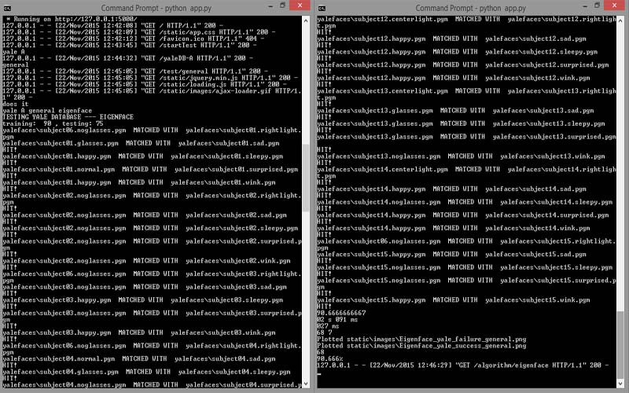
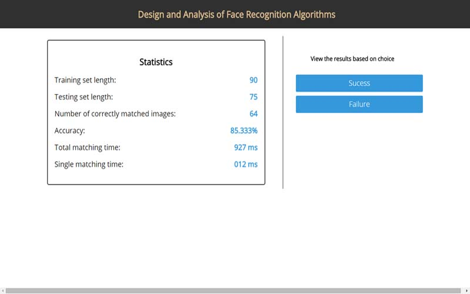
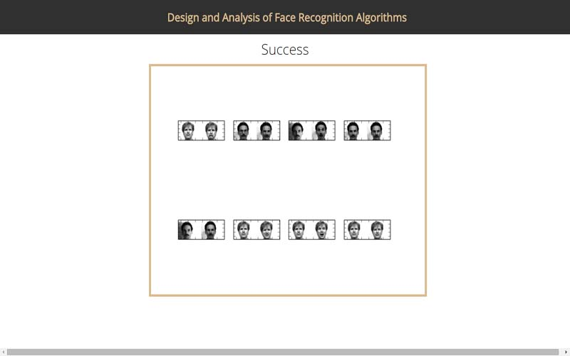
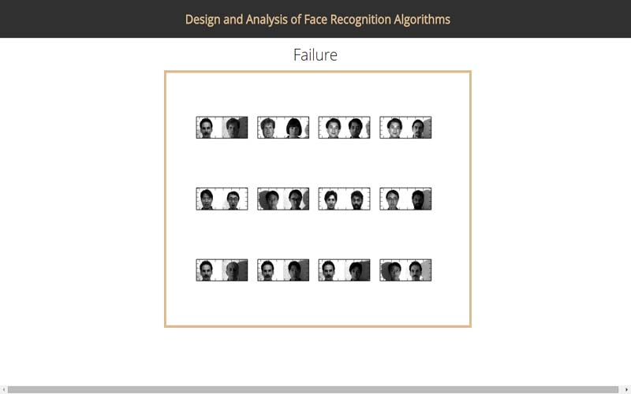
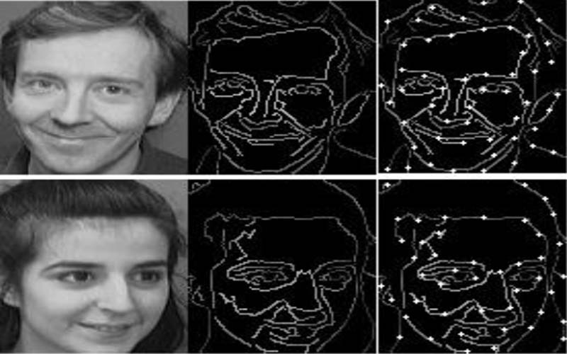
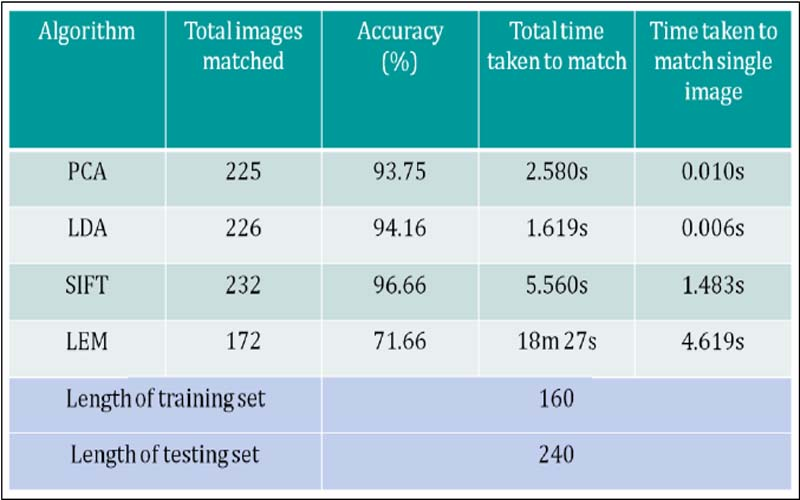

StayFit
Dec. 2016
Stay fit is an interactive public installation that tracks the movements of the users standing in front of it. The users need to exercise (currently supports jogging) to activate the system. As they jog a funny message or image unveils on the screen. To completely reveal the message they need to jog for a specified duration (5mins).
The inspiration for this project was from a French ad on Contrex's exercise bike campaign which tries to engage the user in the exercise by using technology and visuals to light up a building based on the amount of activity completed collectively by a group of women.
Technologies Used:
Tools: Microsoft Kinect
Languages: Processing, Python
Abhivrudhi
June. 2016
An interactive illustration that depicts concept of shared economy. From Lyft, AirBnb, TaskRabbit to other applications like DogVacay etc that have become popular in the recent times, the illustration covers them all.
The illustration ia made interactive by providing minute interactions which provides information on each application as one hovers over parts of the static image.
Technologies Used:
Languages: Javascript, Jquery Qtip, HTML5, CSS3
Face Recognition Software
Feb. 2014 - May. 2014
Designed and Implemented a face recognition software & a Web user interface to test, analyze and compare various face recognition algorithms based on how efficiently each of them performs against challenges of face recognition. The challenges being Occlusion, Expression, Illumination, Age and Pose.
Utilized ‘Yale database A’ and ‘ORL database’ for testing purposes. Images are categorized based on factors such as occlusion, glasses, pose, etc. and every algorithm is tested against each condition to evaluate its performance.
The code for the application is available at github.
Technologies Used:
Languages: Python, HTML, CSS, Javascript, bash
Libaries: OpenCV, PIL, NumPy, Flask
Databases: Yale Database A, ORL database







Textor
Feb. 2013 - May. 2013
Designed & developed a complete text editor & it's graphical user interface. The simple editor supported the following functionalities: font change, font color change, background wallpaper change, cut, copy, paste, delete, undo/redo, save/save as, open documents previously created using textor
Proper calibration algorithms were used to perfect the selection of text. Functions like ‘cut’ and ‘paste’ took the character width into account to support various fonts.
Technologies Used:
Languages:C++, OpenGL